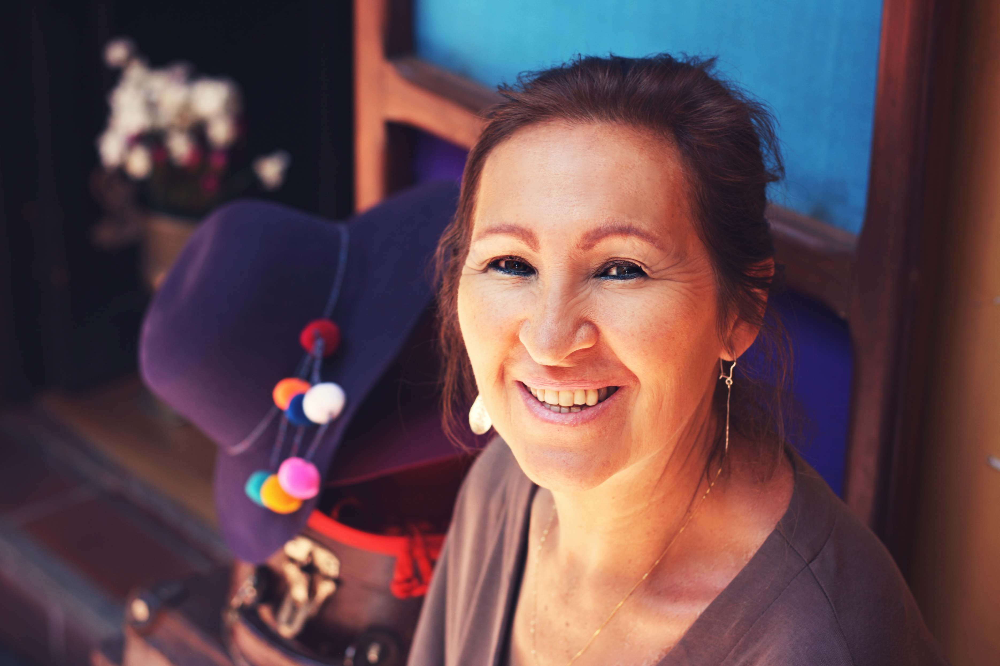

Santiago SebastiánSantiago Sebastián works at Eureka as an Instructor of Spanish. He has four (12) years of experience in the teaching field, inclusive of five (5) years as an elementary Spanish teacher, four (4) years as a secondary Spanish teacher and three (3) years as a tertiary Spanish Instructor in Trinidad. He developed an interest in teaching Spanish not just the language but also the culture, after he moved to Trinidad from Argentina at the age of 16. He realized not much emphasis was placed on learning Spanish, particularly the culture, in Trinidad and as he travelled he found this was also true of other English speaking Caribbean islands such as Barbados. Thus he sought to change this after graduating from the University of Waterloo with a bachelor’s degree in Spanish/English Translation and having earned his license in 2003 after acing the board of examinations. |
|
|  |
Jessica WalkesJessica Walkes works at Eureka as an Assistant Professor of Spanish. She has four (4) years of experience in the teaching field, inclusive of two (2) years as an elementary Spanish teacher and two (2) years as a secondary Spanish teacher in Barbados. She developed an interest in teaching the language and culture of Spanish when studying Latin American Literatures and Cultures in the first year of university. She found the language its history and culture to be rich and fulfilling and wanted to pass this onto people who have little to no interaction with the language or the culture. Jessica Walkes holds a diploma in History and Spanish and a diploma in Spanish Studies, both at the University of Havana. She earned her teaching license in 2011 after passing the board of examinations. |
Michael MayeMichael Maye works at Eureka as an Assistant Professor of Spanish. He has five (5) years of experience in the teaching field, inclusive of three (4) years as a secondary Spanish teacher and one (1) year as a tertiary Spanish Professor in Jamaica. Originally born in Puerto Rico to a Puerto Rican mother and a Jamaican father, Michael Maye spent most of his life between living in Jamaica and Puerto Rican. Thus he developed a great appreciation for Spanish and English and longed to see the Spanish speaking islands and the English speaking islands of the Caribbean develop stronger relationships by sharing in each other’s culture and language. Michael Maye holds a bachelor’s degree in Spanish studies from the University of Puerto Rico. He earned his teaching license in 2010 after passing the board of examinations. |